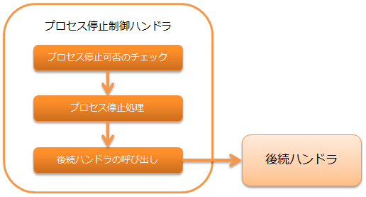

プロセス停止制御ハンドラ¶
本ハンドラは、以下のようなループ制御を行なうハンドラの後続に配置することで、 ループを中断してプロセス停止要求を示す例外を送出する機能を提供する。
本ハンドラでは以下の処理を行う。
- プロセス停止可否のチェック(プロセス停止フラグが”1”であればプロセス停止対象と判定)
- プロセス停止処理
補足
都度起動バッチでは、大量データに対する処理が終わらない場合などに、強制的に処理を停止するために本ハンドラを使用する。
重要
本ハンドラでは、プロセス停止フラグの初期化は行わない。 再度同じプロセスを実行する際には、予めプロセス停止フラグを初期化すること。
処理の流れは以下のとおり。
モジュール一覧¶
<dependency>
<groupId>com.nablarch.framework</groupId>
<artifactId>nablarch-fw-standalone</artifactId>
</dependency>
<dependency>
<groupId>com.nablarch.framework</groupId>
<artifactId>nablarch-fw-batch</artifactId>
</dependency>
制約¶
- スレッドコンテキスト変数管理ハンドラ より後ろに設定すること
- 本ハンドラは、スレッドコンテキスト上のリクエストIDをもとに停止処理を行うため、 スレッドコンテキスト変数管理ハンドラ より後ろに本ハンドラを設定する必要がある。
プロセス停止制御を行うための設定¶
プロセス停止制御を行うためには、プロセス停止可否のチェックで使用するテーブル定義情報などを本ハンドラに設定する必要がある。 設定項目の詳細は、 BasicProcessStopHandler を参照。
以下に設定例を示す。
- ポイント
- 都度起動バッチで使用する場合、本ハンドラはサブスレッド側に設定する。
- 常駐バッチで使用する場合、本ハンドラはメインスレッド側に設定する。
<component name="processStopHandler" class="nablarch.fw.handler.BasicProcessStopHandler">
<!-- データベースへアクセスするためのトランザクション設定 -->
<property name="dbTransactionManager" ref="simpleDbTransactionManager" />
<!-- チェックで使用するテーブルの定義情報 -->
<property name="tableName" value="BATCH_REQUEST" />
<property name="requestIdColumnName" value="REQUEST_ID" />
<property name="processHaltColumnName" value="PROCESS_HALT_FLG" />
<!-- プロセス停止フラグのチェック間隔(任意) -->
<property name="checkInterval" value="1" />
<!-- プロセス停止時の終了コード(任意) -->
<property name="exitCode" value="50" />
</component>